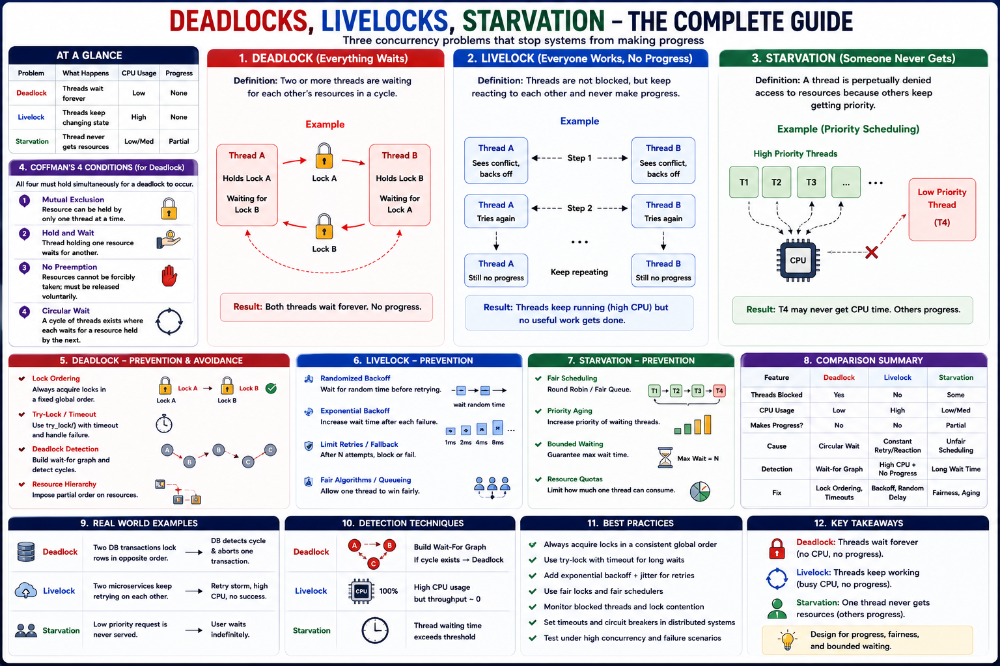

Staff Engineer Reference — Concurrency Failure Modes
Instead of learning deadlock, livelock, and starvation separately, understand why concurrent systems stop making progress, how operating systems detect these problems, and how Staff Engineers design systems that avoid them.
Concurrency allows multiple threads or processes to execute simultaneously. However, when they compete for shared resources — Locks, Mutexes, CPU, Semaphores, Thread pools, Database connections, Files, Network resources — three major failure modes can occur:
| Problem | What Happens | CPU Usage | Progress |
|---|---|---|---|
| Deadlock | Threads wait forever | Low | None |
| Livelock | Threads constantly retry | High | None |
| Starvation | One thread never gets resources | Mixed | Partial |
Deadlock occurs when multiple threads wait for each other in a circular dependency. No thread can continue.
Coffman's Four Conditions
A deadlock can occur only if all four conditions are true. Breaking any one condition prevents deadlock.
| Condition | Description |
|---|---|
| Mutual Exclusion | Resource owned by one thread |
| Hold and Wait | Thread holds one resource while waiting for another |
| No Preemption | Resource cannot be forcibly taken |
| Circular Wait | Threads form a dependency cycle |
Deadlock Flow
Preventing Deadlocks
The simplest and most effective solution is consistent lock ordering. Common strategies:
| Strategy | Mechanism |
|---|---|
| Global lock ordering | Always acquire locks in same order (A→B→C) |
| Try-lock with timeout | Use tryLock(timeout) — fail gracefully on contention |
| Resource hierarchy | Assign levels; threads only acquire higher-level locks |
| Deadlock detection | Wait-for graph cycle detection (PostgreSQL, MySQL) |
| Transaction rollback | DB aborts one transaction and retries |
Livelock occurs when threads are not blocked, but continuously react to each other, preventing useful work. Unlike deadlock — threads keep running, CPU usage is high, but no thread completes work. The system appears busy but makes zero forward progress.
Preventing Livelock
Randomization prevents threads from colliding repeatedly:
| Strategy | Solution |
|---|---|
| Random delay (jitter) | Insert random sleep before retrying |
| Exponential backoff | Double retry intervals after each failure (TCP, gRPC, AWS SDK) |
| Fair locks | Allow one thread to "win" (e.g., ticket lock) |
| Retry limits | Limit retries; fallback to blocking mutex |
| Yield CPU occasionally | Adaptive spinning with backoff (Linux spinlocks) |
Starvation occurs when a thread waits indefinitely because other threads continuously receive resources first. The system works — but one thread never progresses.
Common causes: Priority scheduling · Unfair locks · Busy thread pools · Resource monopolization · Queue imbalance
Preventing Starvation
Operating systems typically use:
| Strategy | Explanation |
|---|---|
| Fair scheduling | Round-robin, FIFO ordering |
| Priority aging | Gradually increase priority of waiting threads until scheduled |
| Completely Fair Scheduler (CFS) | Linux: tracks virtual runtime, schedules most-starved thread next |
| Fair locks | Ticket locks guarantee FIFO order for lock acquisition |
| Bounded wait | Guarantee max waiting time (real-time systems) |
| Feature | Deadlock | Livelock | Starvation |
|---|---|---|---|
| Threads Blocked | Yes | No | Some |
| CPU Usage | Low | High | Mixed |
| Progress | None | None | Partial |
| Root Cause | Circular Wait | Infinite Retry | Unfair Scheduling |
| Fix | Lock Ordering | Backoff | Fair Scheduling |
| Detection | Wait-for Graph | High CPU + No Throughput | Long Waiting Time |
| Latency | Infinite | Infinite | High |
| Throughput | Zero | Zero | Reduced |
Thread State Comparison
Linux prevents these problems using:
| Component | Responsibility |
|---|---|
| Scheduler (CFS) | Fair CPU allocation — tracks virtual runtime debt |
| Mutexes | Synchronization via atomic CAS + futex |
| Spinlocks | Short critical sections — adaptive spinning with backoff |
| Futex | Efficient user-space locking — kernel sleep only under contention |
| Lockdep | Kernel deadlock detection — validates lock ordering at runtime |
Distributed Deadlock
Fix: Timeouts, Circuit breakers, Global lock ordering
Distributed Livelock (Retry Storm)
Fix: Exponential backoff, Random jitter
Distributed Starvation
Fix: Fair load balancing, Weighted routing
| Scenario | Problem | How to Fix |
|---|---|---|
| Two DB transactions update rows in opposite order | Deadlock | DB aborts one transaction, consistent lock ordering |
| Kubernetes controllers retry failed reconciliation without backoff | Livelock | Exponential backoff on requeue |
| One Kafka consumer continuously receives all partitions | Starvation | Fair consumer group scheduling |
| Java thread pool — one long task monopolizes all workers | Starvation | Separate thread pools, bounded queues |
| Raft cluster — simultaneous elections, split votes | Livelock | Randomized election timeout |
| Scenario | Problem Type | Mitigation Strategy |
|---|---|---|
| Database Deadlock — transactions acquire locks in different order | Deadlock | Enforce consistent lock ordering |
| Retry Storm — aggressive retries after temporary failures | Livelock | Exponential backoff with jitter |
| Thread Pool Starvation — long tasks occupy all workers | Starvation | Separate thread pools, bounded queues |
| API Gateway — priority traffic monopolizes worker threads | Starvation | Weighted Fair Queueing |
| Kubernetes Leader Election — simultaneous elections | Livelock | Randomized election timeout |
Prevention Patterns
| Pattern | Solves | Description |
|---|---|---|
| Timeout + Retry with Jitter | Deadlock, Livelock | Prevents circular waits + synchronized retries |
| Circuit Breaker | Deadlock | Breaks dependency loop between services |
| Bulkhead Pattern | Starvation | Isolates resources per client or service |
| Rate Limiting / Token Bucket | Starvation | Fair resource distribution |
| Leader Election with Randomized Timeout | Livelock | Ensures convergence in cluster coordination |
| Distributed Lock Hierarchy | Deadlock | Global ordering (e.g., ZooKeeper paths) |
| Lock-Free / Optimistic Algorithms | Deadlock, Contention | CAS-based structures avoid locks entirely |
A Staff Engineer asks the right questions before a system hangs in production:
| Scenario | Recommended Solution |
|---|---|
| Multiple Locks | Global Lock Ordering |
| Retry Logic | Exponential Backoff + Jitter |
| Thread Pool | Fair Queue + Bounded Queue |
| Priority Scheduling | Priority Aging |
| Distributed Transactions | Timeouts + Deadlock Detection |
| High Contention | Lock-Free / Optimistic Algorithms |
Production Readiness Checklist
These three terms are the core concurrency failure modes that staff engineers must be able to identify, explain, and design mitigations for at both OS and distributed system levels.
| Problem | Type | What Happens | CPU Usage | Example Analogy |
|---|---|---|---|---|
| Deadlock | Waiting cycle | Threads wait forever for each other's resources | Idle (no progress) | Two people holding one end of two chopsticks each, waiting for the other to release |
| Livelock | Reactive loop | Threads keep changing state but never make progress | Busy (high CPU) | Two people both step left/right repeatedly to avoid each other — but never pass |
| Starvation | Scheduling unfairness | Some threads never get access to CPU or resources | Others progress; one starves | Waiter keeps serving VIPs, ignoring you |
A deadlock occurs when two or more threads are waiting for each other's resources, creating a circular wait — none can proceed.
OS-Level Conditions — Coffman's 4 Necessary Conditions
For a deadlock to occur, all four must be true. Break any one of these, and deadlock is impossible.
| # | Condition | Meaning |
|---|---|---|
| 1️⃣ | Mutual Exclusion | A resource can be held by only one thread at a time. |
| 2️⃣ | Hold and Wait | A thread holds one resource while waiting for another. |
| 3️⃣ | No Preemption | Resources can't be forcibly taken; must be released voluntarily. |
| 4️⃣ | Circular Wait | A → B → C → A dependency loop exists. |
Example (Classic Deadlock — C)
Detection & Prevention
| Strategy | Mechanism | Example |
|---|---|---|
| Avoid Circular Wait | Impose lock ordering (always acquire locks A→B→C) | Code convention |
| Timeout / Try-Lock | Use pthread_mutex_trylock() with timeout | Detect and recover |
| Deadlock Detection | Maintain "wait-for graph" and detect cycles | Databases, OS kernels |
| Preemption | Allow forced resource release | Kernel driver design |
| Banker's Algorithm | Predict safe resource allocation state | Used in OS theory and DB transaction systems |
A livelock occurs when threads aren't blocked but are constantly reacting to each other in a way that prevents forward progress.
| Strategy | Solution |
|---|---|
| Random backoff | Insert random sleep before retrying (like in network protocols) |
| Fair scheduling | Allow one thread to "win" (e.g., lock with ticket number) |
| State transition limits | Limit retries; fallback to blocking mutex |
| Exponential backoff | Increase delay with each failure (used in Ethernet CSMA/CD, spinlocks) |
Starvation happens when some threads never get CPU or resource access, because others continuously take priority.
Example 1 — CPU Starvation
Example 2 — Scheduling Starvation
| Strategy | Explanation |
|---|---|
| Fair Queuing | Maintain FIFO order or round-robin scheduling |
| Priority Aging | Gradually increase priority of waiting threads |
| Randomized Access | Random selection avoids starvation bias |
| Bounded Wait | Guarantee max waiting time (real-time systems) |
| Property | Deadlock | Livelock | Starvation |
|---|---|---|---|
| Definition | Threads block each other forever | Threads actively run but make no progress | Some threads never get scheduled |
| CPU usage | 0% (idle) | 100% (busy spinning) | Mixed — starving thread idle |
| Root cause | Circular waiting | Overactive retry logic | Unfair scheduling or resource hoarding |
| Progress | ❌ None | ❌ None | ⚠️ Partial |
| Detection | Wait-for graph cycle | High CPU + no state change | Monitor long waiting times |
| Fix | Break circular wait / enforce lock order | Add randomness / yield / backoff | Fair scheduling / priority aging |
| Occurs in | Mutex, DB locks, distributed transactions | Spinlocks, retry loops, network contention | Priority queues, thread pools |
Normal Thread Life Cycle
Deadlock — Circular Waiting Forever
Livelock — Everyone Moves, Nothing Progresses
Starvation — Unfair Access
Side-by-Side Summary
| Problem | In Local Threads | In Distributed Systems |
|---|---|---|
| Deadlock | Threads hold locks waiting on each other | Services or nodes hold resources or transactions waiting on each other |
| Livelock | Threads repeatedly retry or yield | Services continuously retry requests or elections with no progress |
| Starvation | Scheduler ignores low-priority threads | Some requests, services, or nodes are always deprioritized or delayed |
Distributed Deadlock Examples
| Technique | Description |
|---|---|
| Timeouts | Each request or transaction has a TTL; abort after deadline. |
| Wait-for graph detection | DB or distributed lock managers detect dependency cycles (e.g., PostgreSQL, Spanner). |
| Global ordering | Impose consistent lock ordering (e.g., always lock users before orders). |
| Idempotent retries | On timeout, safely retry (design endpoints to handle duplicates). |
| Deadlock avoidance algorithms | E.g., timestamp ordering (younger transactions back off). |
Distributed Livelock Examples
| Technique | Description |
|---|---|
| Randomized backoff / jitter | Each node waits a random delay before retrying or starting election. |
| Exponential backoff | Double retry intervals after each failure (used in TCP, gRPC, AWS SDK). |
| Leader stickiness / fencing tokens | Prevent multiple concurrent leaders. |
| Quorum requirement | Require majority votes before progressing (Raft, Paxos). |
Distributed Starvation Examples
| Strategy | Description |
|---|---|
| Fair queuing / weighted round-robin | Balance load evenly or by capacity. |
| Priority aging | Gradually increase waiting job's priority. |
| Leaky bucket / rate limiting | Bound per-client throughput. |
| Shard rebalancing | Redistribute hot shards dynamically. |
| Backpressure | Let clients slow down if server overloaded. |
Real-world Distributed Examples
| Scenario | Problem | How to Fix |
|---|---|---|
| Microservices with circular dependencies | Deadlock | Introduce async queues or cache responses; add timeouts |
| Kafka consumers repeatedly rebalance | Livelock | Use incremental rebalancing, random jitter |
| API Gateway overloading one region | Starvation | Implement weighted routing or request throttling |
| Database transactions holding locks too long | Deadlock | Reduce transaction scope, consistent lock order |
| Leader election storm in Raft cluster | Livelock | Randomized election timeout |
| Low-priority background job never runs | Starvation | Fair scheduler, aging, per-tenant quotas |
Prevention Patterns
| Pattern | Solves | Description |
|---|---|---|
| Timeout + Retry with Jitter | Deadlock, Livelock | Prevents circular waits + synchronized retries |
| Circuit Breaker | Deadlock | Breaks dependency loop between services |
| Bulkhead Pattern | Starvation | Isolates resources per client or service |
| Rate Limiting / Token Bucket | Starvation | Fair resource distribution |
| Leader Election with Randomized Timeout | Livelock | Ensures convergence in cluster coordination |
| Distributed Lock Hierarchy | Deadlock | Defines global ordering (e.g., ZooKeeper paths) |
Real Examples
